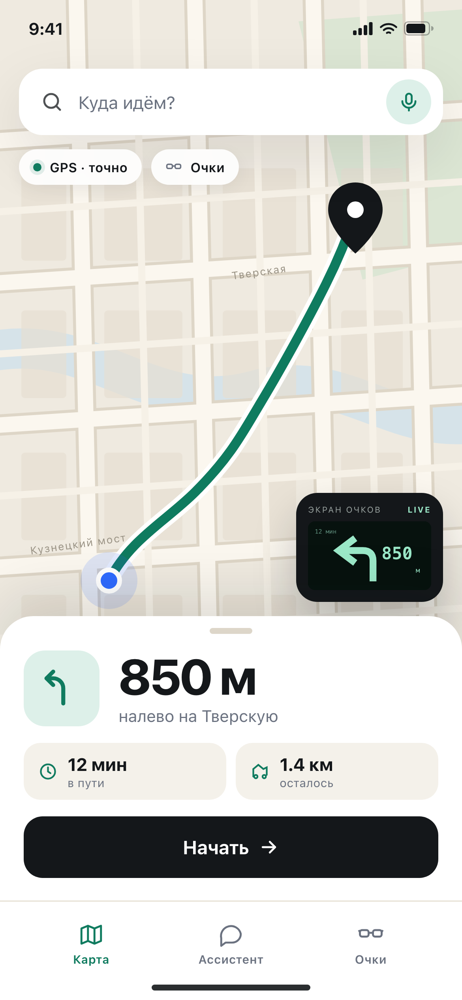
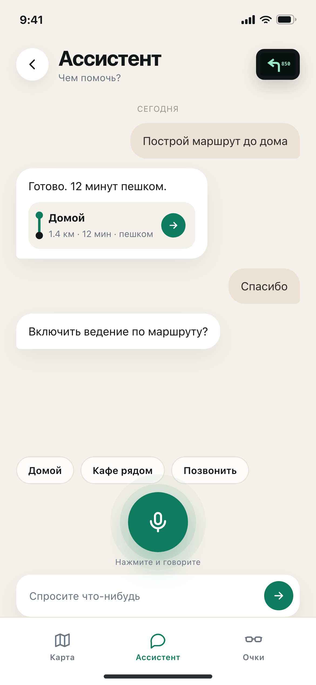
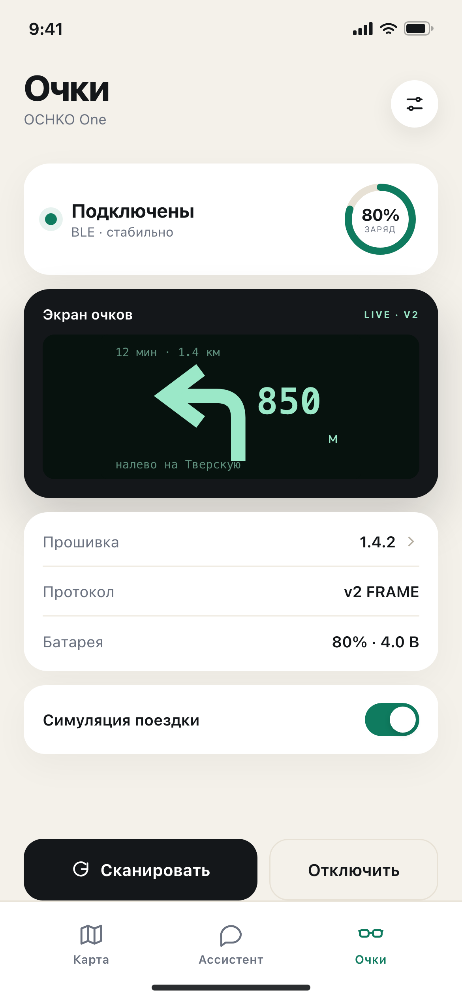
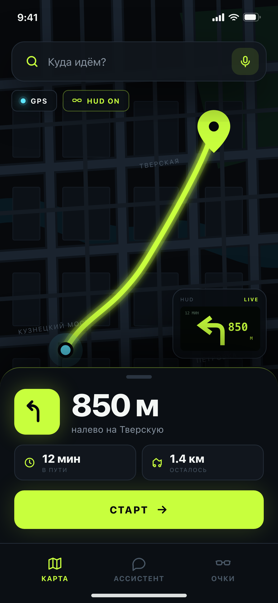
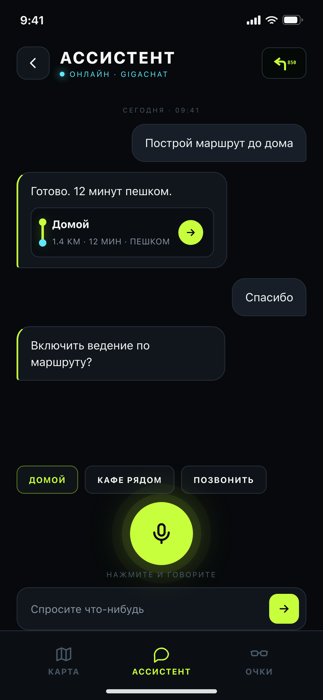
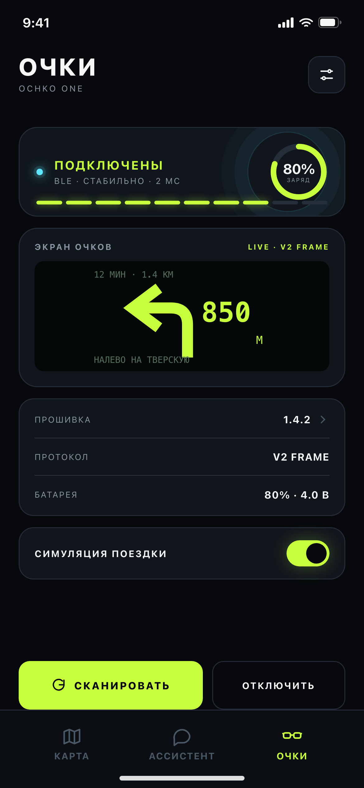
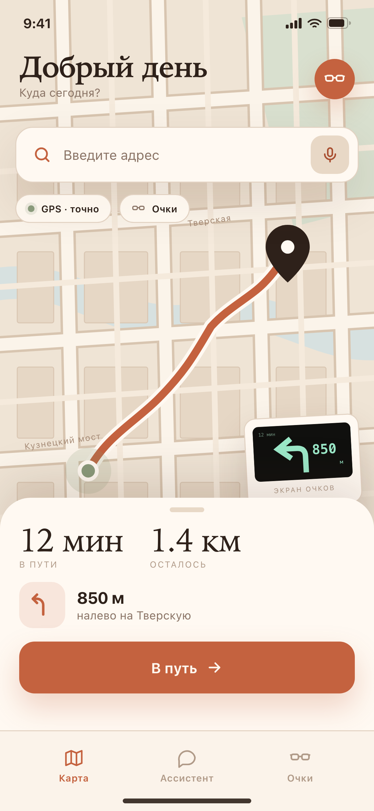
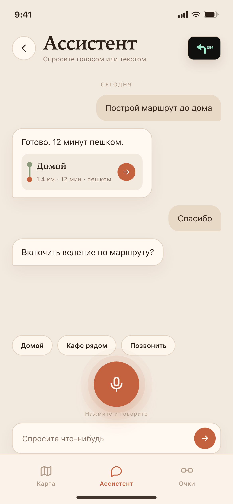
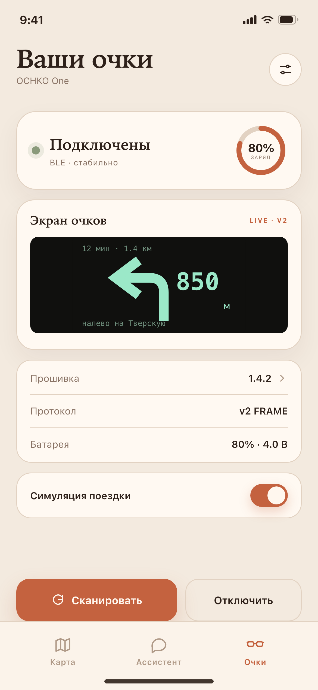

Один сценарий — карта, голосовой ассистент и очки. Три разных характера.
Навигация
Ассистент
Очки
V1
Air
Светлый, спокойный, точный. Максимум читаемости и воздуха. Ближе всего к «инструменту на каждый день».



V2
Pulse
Тёмный HUD, лайм и циан. Контраст для улицы и ночи. Ощущение техники, а не приложения.



V3
Terra
Тёплая редакционная подача: терракота, песок, антиква. Самый характерный и «человеческий» вариант.


